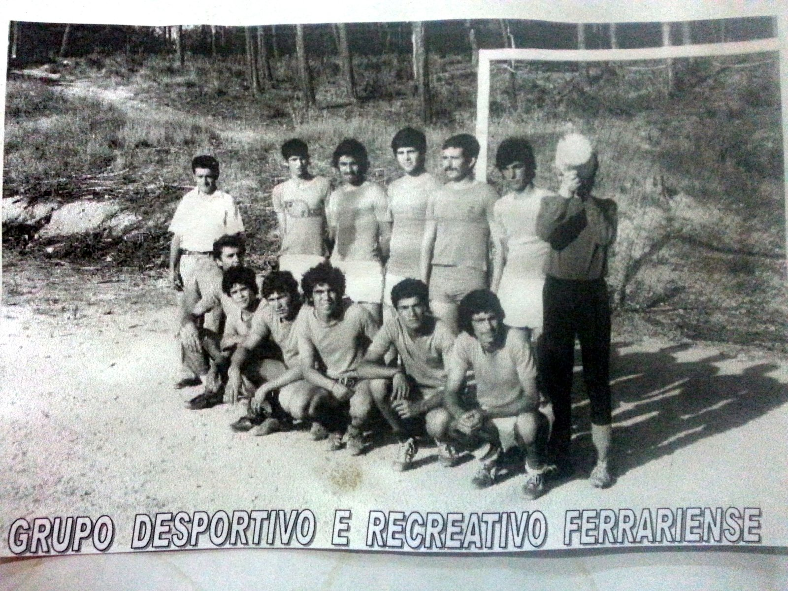
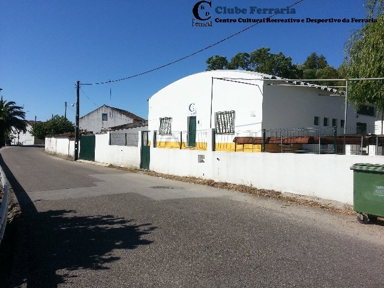
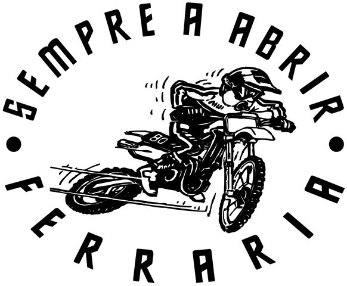
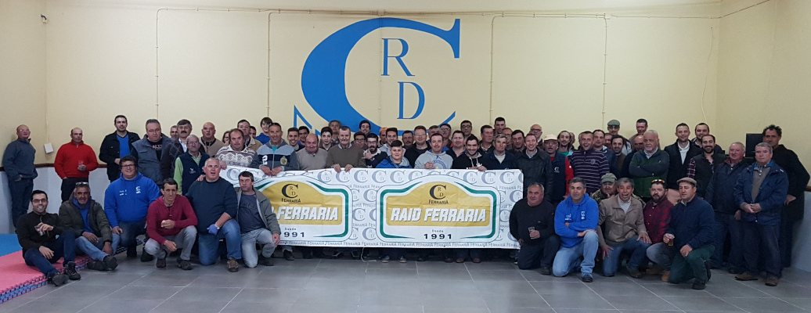

Arquivo histórico
Grupo Desportivo e Recreativo Ferrariense
Uma das imagens antigas que recorda o lado desportivo e recreativo que deu força ao associativismo local.
O Clube
Da antiga Comissão de Festas ao CCRD Ferraria, o clube cresceu com a aldeia: convívio, desporto, cultura, Raid, festas e uma comunidade que continua a aparecer.

Memória fotográfica
Uma página mais visual para mostrar que o clube não é apenas um edifício: é a história das pessoas da Ferraria.
Uma das imagens antigas que recorda o lado desportivo e recreativo que deu força ao associativismo local.

Espaço de encontro da comunidade, reuniões, convívios, aniversários, refeições e organização dos grandes eventos.

A paixão pelos motores também faz parte da identidade da Ferraria, do passeio de motorizadas ao Raid Ferraria.

Organização, voluntários, sócios e amigos mantêm viva a atividade do clube ao longo de todo o ano.
Linha do tempo
O Clube Ferraria nasceu do espírito de união da população. Primeiro ligado às festas e ao convívio local, foi crescendo para uma estrutura cultural, recreativa e desportiva com várias frentes de atividade.
Hoje reúne a memória da aldeia, a organização da Festa da Ferraria, o associativismo dos sócios, o desporto, o Raid Ferraria e iniciativas que aproximam gerações.
Festas, música, refeições, rifas, doces tradicionais e encontros que juntam a população e visitantes.
Do futebol antigo ao Raid Ferraria e ao Passeio de Motorizadas, o desporto tem presença forte na identidade do clube.
Sócios, voluntários e direção garantem que a Ferraria continua a ter uma casa aberta e dinâmica.
Órgãos sociais
Informação reorganizada por órgão para leitura rápida.
Consulta os documentos formais do clube.